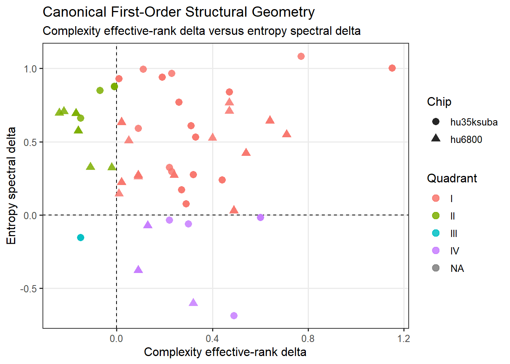
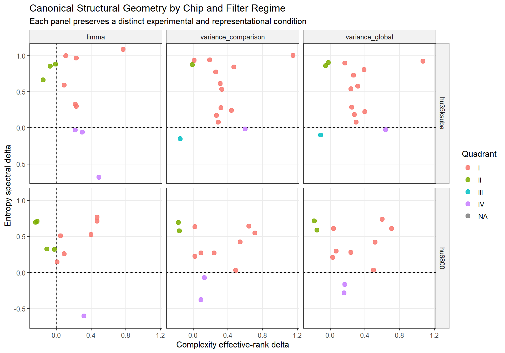
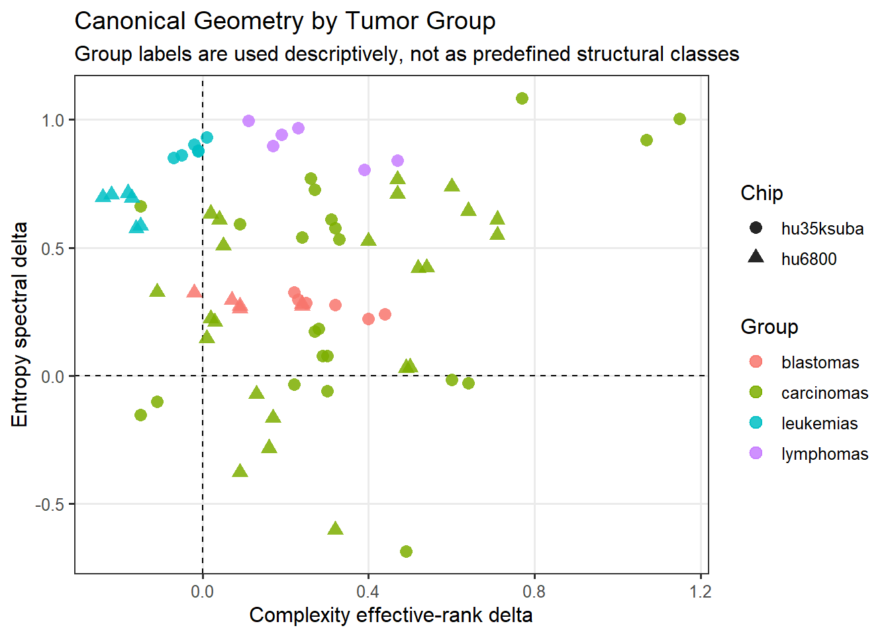
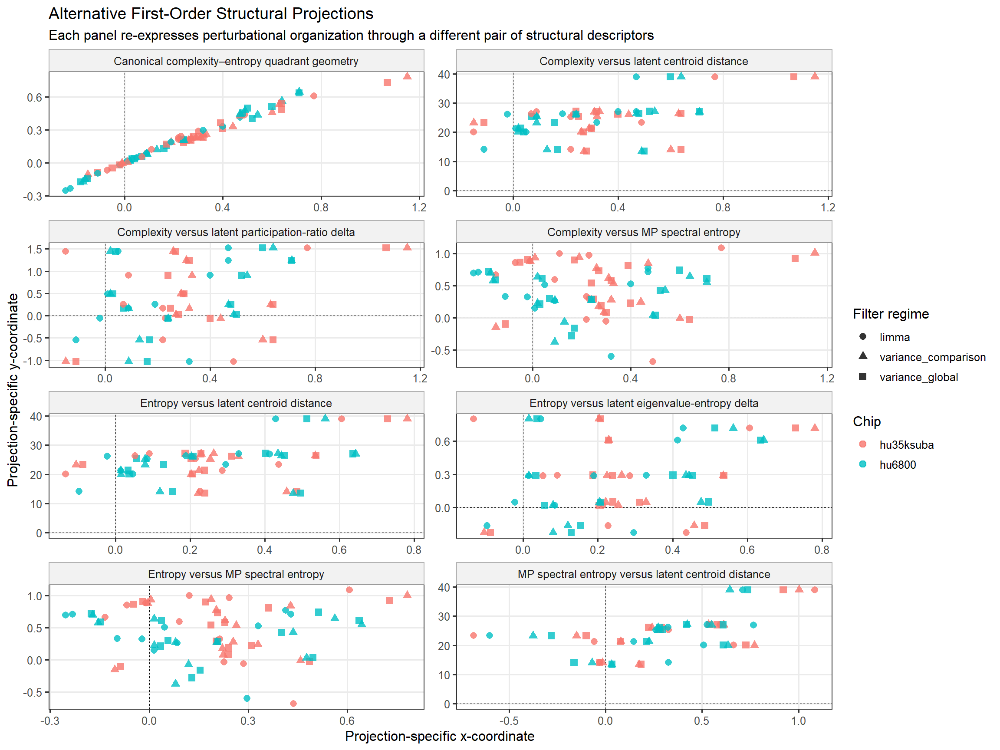
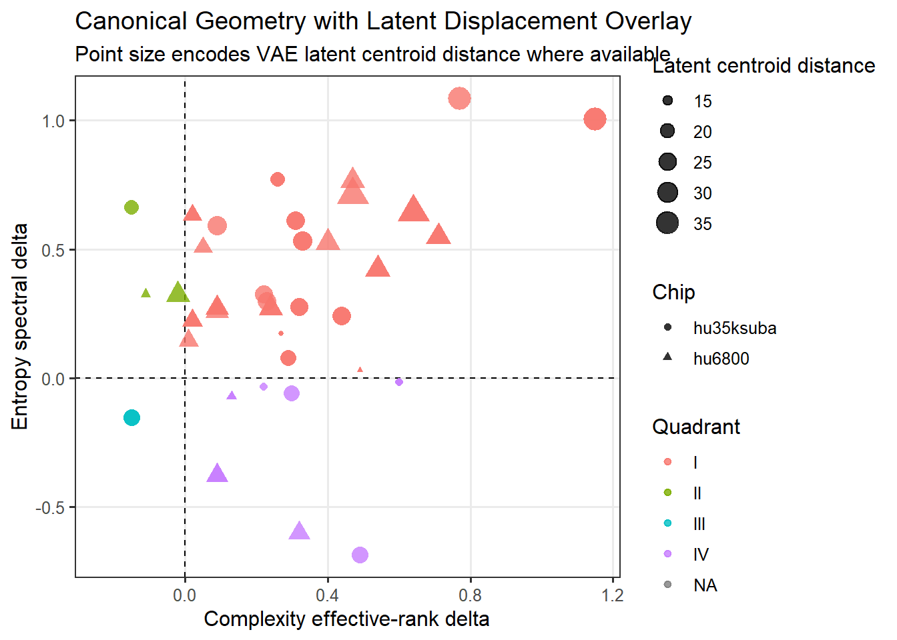
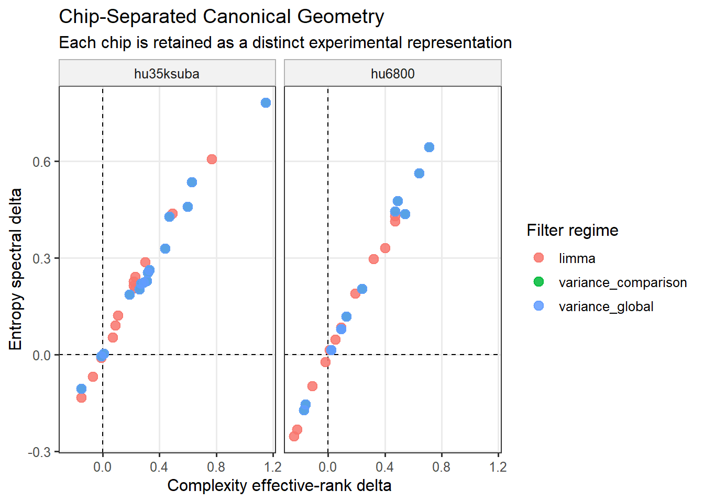

| projection_id | projection_label | x_metric | y_metric | x_label | y_label | is_canonical | projection_interpretation |
|---|---|---|---|---|---|---|---|
| canonical_complexity_entropy | Canonical complexity–entropy quadrant geometry | complexity__effrank_delta | entropy__spectral_delta | Complexity effective-rank delta | Entropy spectral delta | TRUE | Primary canonical quadrant coordinate system. |
| complexity_latent_distance | Complexity versus latent centroid distance | complexity__effrank_delta | latent__centroid_distance | Complexity effective-rank delta | Latent centroid distance | FALSE | Alternative projection relating covariance-rank displacement to nonlinear latent manifold separation. |
| complexity_latent_pr | Complexity versus latent participation-ratio delta | complexity__effrank_delta | latent__pr_delta | Complexity effective-rank delta | Latent participation-ratio delta | FALSE | Alternative projection comparing covariance effective-rank displacement with latent dimensional reorganization. |
| complexity_mp_entropy | Complexity versus MP spectral entropy | complexity__effrank_delta | mp__spectral_entropy_delta | Complexity effective-rank delta | MP spectral entropy delta | FALSE | Alternative projection linking effective-rank displacement to random-matrix spectral reorganization. |
| entropy_latent_distance | Entropy versus latent centroid distance | entropy__spectral_delta | latent__centroid_distance | Entropy spectral delta | Latent centroid distance | FALSE | Alternative projection relating informational spectral displacement to nonlinear latent manifold separation. |
| entropy_latent_eig_entropy | Entropy versus latent eigenvalue-entropy delta | entropy__spectral_delta | latent__eig_entropy_delta | Entropy spectral delta | Latent eigenvalue-entropy delta | FALSE | Alternative projection comparing spectral entropy in observed covariance space and latent covariance space. |
| entropy_mp_entropy | Entropy versus MP spectral entropy | entropy__spectral_delta | mp__spectral_entropy_delta | Entropy spectral delta | MP spectral entropy delta | FALSE | Alternative projection comparing entropy-derived spectral organization across engines. |
| mp_latent_distance | MP spectral entropy versus latent centroid distance | mp__spectral_entropy_delta | latent__centroid_distance | MP spectral entropy delta | Latent centroid distance | FALSE | Alternative projection relating random-matrix spectral reorganization to nonlinear latent manifold separation. |
2 First-Order Perturbational Geometry
Global Structural Occupancy of Transcriptomic Malignancies
3 Purpose
This chapter introduces the first-order perturbational geometry of the Global Cancer Structural Inference Framework.
First-order geometry asks:
Do malignant transcriptomic systems occupy reproducible regions of structural state space?
Each point in the following plots represents a normal–tumor comparison under a specific platform and feature-projection condition. The axes are not genes, pathways, or PCA components. They are structural descriptors derived from the complexity, entropy, MP spectral, and latent-geometry engines.
The purpose of this chapter is to establish the observed structural occupancy map of malignancy before asking whether those positions are stable.
Central claim. The first-order geometry evaluates whether tumor systems occupy constrained perturbational regions rather than scattering randomly across structural coordinates.
4 Data Source and Projection Catalogue
The plots in this chapter are generated from DuckDB reporting views created specifically for global structural visualization.
The table below lists the available first-order projections. The canonical projection defines the primary quadrant coordinate system; the alternative projections are complementary cross-engine views used to evaluate whether similar structural organization appears under different descriptor pairings.
5 Canonical First-Order Geometry
5.1 Structural question
Do malignant transcriptomic systems occupy recurrent perturbational regions within the canonical structural coordinate system?
5.2 Coordinate interpretation
The canonical map uses:
- x-axis = complexity effective-rank delta,
- y-axis = entropy spectral delta.
The x-axis measures covariance-rank expansion or contraction. The y-axis measures redistribution of spectral informational mass. Together, these descriptors define a structural coordinate system for tumor-associated transcriptomic reorganization.
5.3 What to look for
The reader should look for whether points distribute randomly across all four quadrants or whether they concentrate in recurrent regions. Concentration within a region suggests that malignancy is associated with constrained perturbational organization rather than arbitrary transcriptomic disruption.

5.4 Structural interpretation
Predominant occupancy in positive perturbational coordinates would indicate simultaneous increases in dimensional participation and spectral entropy. Such behavior is interpreted as expansionary transcriptomic reorganization rather than simple collapse or random noise.
This map is the primary visual grammar for the framework. Subsequent views ask whether this structural organization persists when the experimental platform, feature projection, or descriptor pairing changes.
6 Canonical Geometry by Chip and Filter Regime
6.1 Structural question
Does perturbational occupancy persist across alternative experimental and representational conditions?
The framework treats chips as distinct experimental systems and filter regimes as distinct feature-space perturbations. The faceted view below preserves these distinctions rather than collapsing them into a single averaged representation.
6.2 What this figure tests
This figure tests whether the canonical perturbational organization is stable across platform and filter-regime contexts. Preservation of relative position across panels suggests that structural occupancy is not merely a preprocessing artifact.

6.3 Structural interpretation
If relative structural ordering remains broadly conserved across panels, then the perturbational geometry is partially invariant under representational perturbation. If specific comparisons drift or cross boundaries, that drift becomes a local structural feature rather than a simple visualization failure.
7 Canonical Geometry by Biological Group
7.1 Structural question
Do broad tumor groups exhibit recurrent occupancy tendencies within the canonical structural map?
This view uses biological group labels descriptively. The groups are not treated as predefined structural classes; instead, the figure asks whether broad biological categories show detectable occupancy tendencies within perturbational state space.

7.2 Structural interpretation
Group-level recurrence suggests that distinct tumor systems may converge toward partially shared perturbational regions. At the same time, within-group spread remains important: tissue identity does not fully determine structural state.
8 Alternative First-Order Structural Projections
8.1 Structural question
Do distinct structural engines detect related perturbational organization?
The canonical map is the primary coordinate system, but it is not the only way to view perturbational transcriptomic organization. Alternative projections compare covariance-rank displacement, spectral entropy, MP spectral organization, and nonlinear latent geometry.
These projections should be read as structural cross-validation experiments. They ask whether similar perturbational organization appears under different descriptor pairings, not whether the canonical quadrant system should be replaced.
| projection_id | projection_label | is_canonical | n_rows | n_complete_xy | pct_complete_xy |
|---|---|---|---|---|---|
| canonical_complexity_entropy | Canonical complexity–entropy quadrant geometry | TRUE | 81 | 81 | 100.0 |
| complexity_latent_distance | Complexity versus latent centroid distance | FALSE | 81 | 63 | 77.8 |
| complexity_latent_pr | Complexity versus latent participation-ratio delta | FALSE | 81 | 63 | 77.8 |
| complexity_mp_entropy | Complexity versus MP spectral entropy | FALSE | 81 | 75 | 92.6 |
| entropy_latent_distance | Entropy versus latent centroid distance | FALSE | 81 | 63 | 77.8 |
| entropy_latent_eig_entropy | Entropy versus latent eigenvalue-entropy delta | FALSE | 81 | 63 | 77.8 |
| entropy_mp_entropy | Entropy versus MP spectral entropy | FALSE | 81 | 75 | 92.6 |
| mp_latent_distance | MP spectral entropy versus latent centroid distance | FALSE | 81 | 57 | 70.4 |
8.2 Projection Panel
8.3 What this figure tests
Each panel pairs a different set of structural descriptors. For example, complexity versus latent centroid distance asks whether covariance-rank reorganization is accompanied by nonlinear manifold displacement. Entropy versus MP spectral entropy asks whether different spectral formulations detect related informational reorganization.

8.4 Structural interpretation
Coherent patterns across alternative projections suggest that multiple engines are detecting related aspects of transcriptomic reorganization. Divergence across projections is also informative: it may indicate that a tumor system reorganizes differently in covariance-rank space, spectral space, or latent manifold space.
9 Canonical Reference with Latent Magnitude Overlay
9.1 Structural question
Do systems exhibiting strong canonical structural displacement also undergo large nonlinear latent displacement?
Latent centroid distance is overlaid on the canonical complexity–entropy map. Point size represents the magnitude of separation between normal and tumor samples in learned latent space.

9.2 Structural interpretation
Large latent displacement within strongly shifted canonical regions suggests that classical covariance geometry and nonlinear latent geometry capture partially overlapping perturbational behavior. Disagreement between canonical position and latent distance may identify systems whose nonlinear manifold displacement is not fully captured by the canonical axes.
10 Chip-Separated First-Order Geometry
10.1 Structural question
How do the two Affymetrix platforms behave when retained as distinct experimental representations?
This view emphasizes that hu35ksuba and hu6800 are related but not interchangeable representational systems.

10.2 Structural interpretation
Chip-separated preservation of structural ordering supports the view that perturbational organization is not confined to a single platform. Chip-specific deviations remain meaningful and are evaluated more directly in the second-order robustness layer.
11 Interpretation
First-order geometry establishes the observed structural positions of tumor systems.
The central finding is not that each tumor has a single altered gene or pathway, but that tumor systems can occupy reproducible regions of transcriptomic structural state space. These maps establish the occupancy structure. The next chapter asks whether those positions are concordant, robust, boundary-sensitive, or projection-dependent.